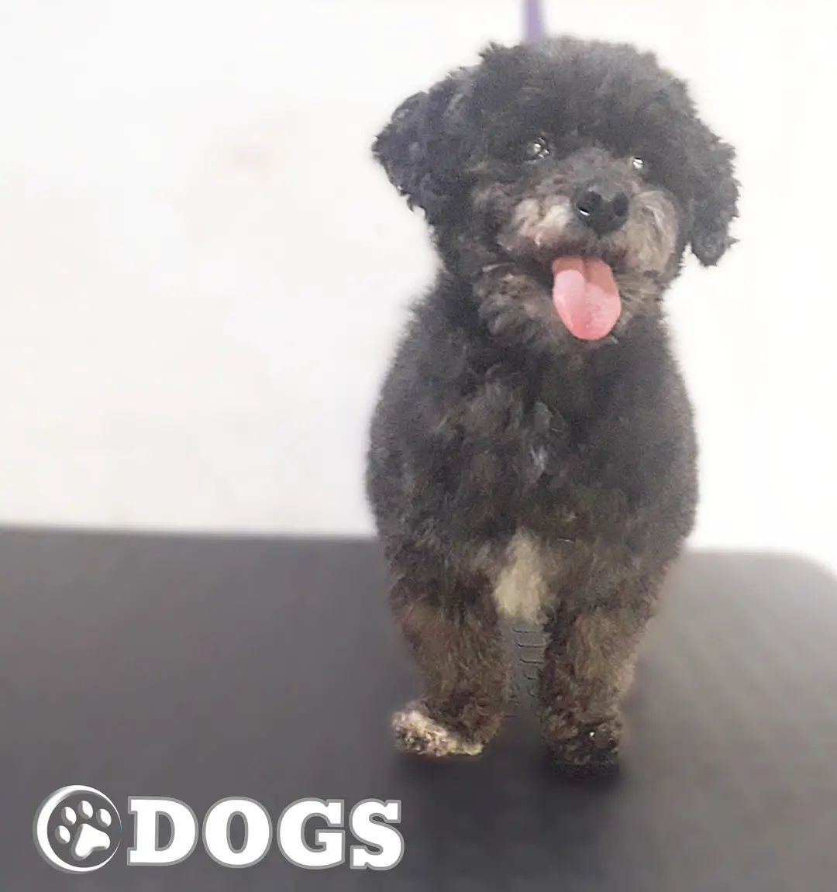
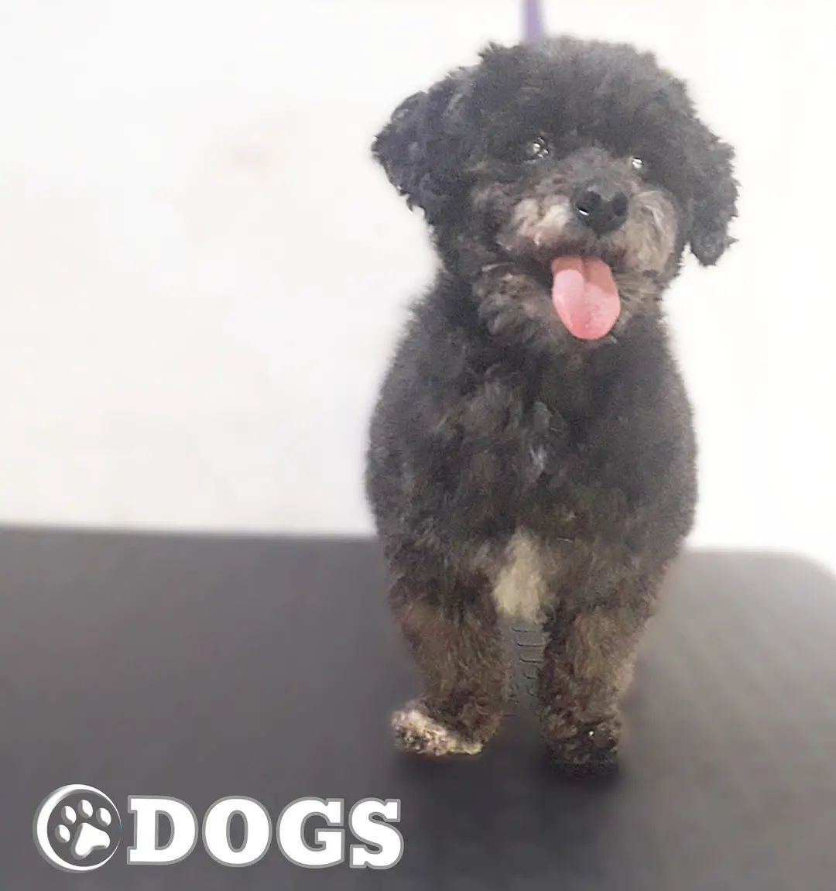

QUIENES SOMOS
En Peluqueria Canina Dogs, somos un grupo de profesionales especializados en la higiene y la estética canina, con mas de 5 años de experiencia en el rubro, que tenemos como finalidad la preservación de la salud de sus mascotas.
Brindandoles una atencion personalizada a cada una de ellas.
No sólo nos ocupamos de los cuidados propiamente estéticos, como pueden ser el peinado o el corte de pelo, sino que también realizamos una inspección al detalle de la salud de su mascota.
Al contrario de lo que mucha gente piensa, en las peluquerías caninas no solamente nos dedicamos a cortar el pelo. También velamos por su salud e higiene de mantenimiento, por lo que no es necesario esperar al siguiente corte para acudir a la peluquería canina, sino que también puede, y más bien debe, acudir de forma rutinaria a darse un baño en profundidad, y es que con el baño no solo se asea al animal, sino que se realizan una serie de cuidados higiénicos bastante recomendables ¡y necesarios!, como son el rasurado de las zonas genital y anal, el corte de uñas, el vaciado perianal y la limpieza de oídos y lagrimales.


 
